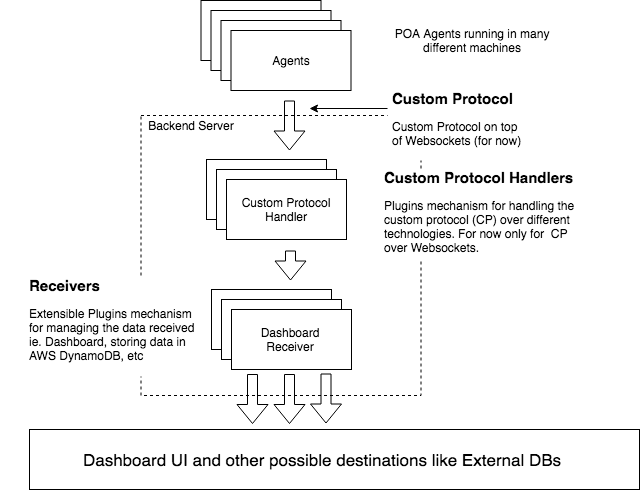

poa_backend v0.1.0 POABackend.Protocol View Source
POA Protocol
This protocol defines the communication between the Agents and the POA Backend.

Basic calls
Only those calls are allowed:
- session (not implemented) - In future in order to add authentication / authorization
- ping - Ping message
- data - Specific message for a given receiver. It can be a metric itself or something else
- bye - Message sent when the Agent wants to close the communication explicitly
ping call
abstract request:
{
id: String() # agent id
secret: String() # secret string for authentication/authorisation
}response:
{
result: String() # “success” or “error”
payload: String() # optional payload
}data call
abstract request:
{
id: String() # agent id
secret: String() # secret string for authentication/authorisation
type: String() # data type (for now only ethereum_metrics)
data: Object() # metric data itself
}response:
{
result: String() # “success” or “error”
payload: String() # optional payload
}bye call
abstract request:
{
id: String() # agent id
secret: String() # secret string for authentication/authorisation
}response:
{
result: String() # “success” or “error”
payload: String() # optional payload
}